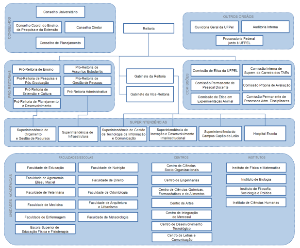
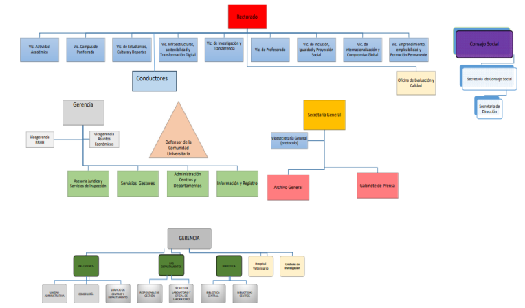
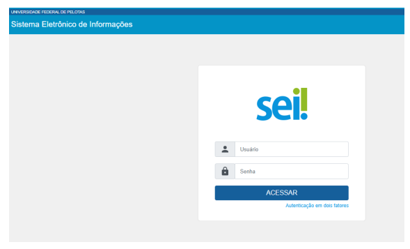
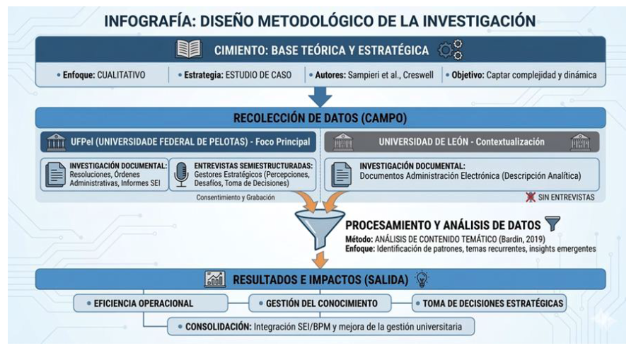
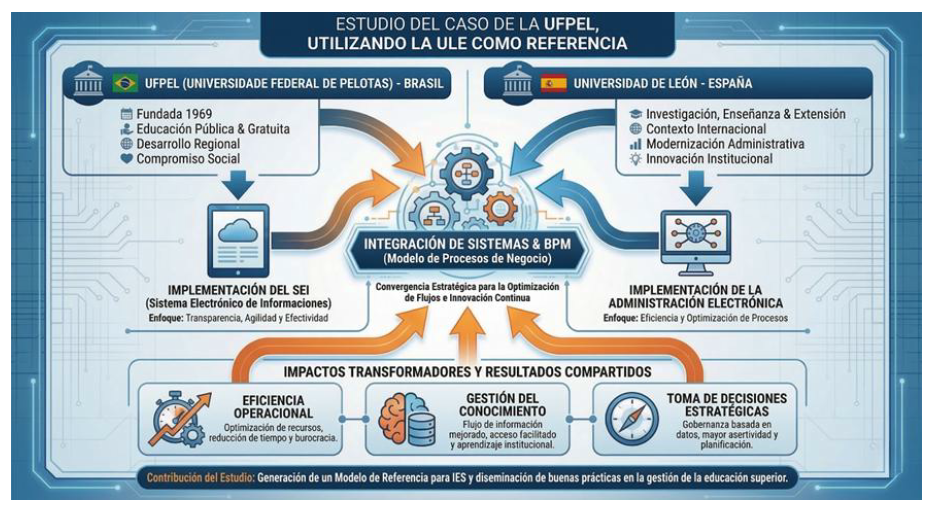
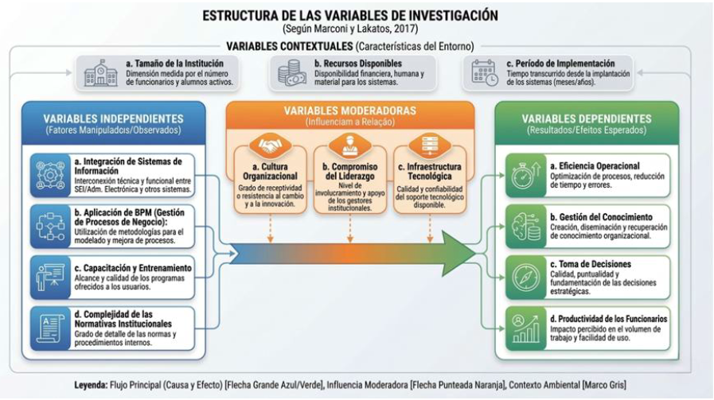
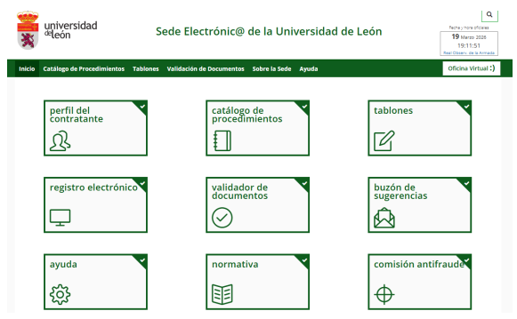

UFPel (Brasil) & Universidad de León (España). Una investigación sobre cómo el SEI puede trascender la gestión documental y convertirse en ecosistema de apoyo a la decisión estratégica, articulando BPM, gestión del conocimiento y visión estratégica de las personas.
Las universidades públicas adoptaron el SEI por imperativo legal. Pero la investigación detecta una brecha en la literatura: nadie analizó empíricamente si ese mismo sistema puede convertirse en instrumento de apoyo a la decisión estratégica.
Mandato de digitalización federal
Obliga a todos los órganos de la administración pública federal a tramitar sus procesos en medios electrónicos.
Ley de Acceso a la Información
Refuerza los principios de publicidad y transparencia que el SEI debe materializar institucionalmente.
Implantación del SEI en la UFPel
La UFPel adopta el Sistema Electrónico de Información (TRF4), disponible gratuitamente para instituciones públicas. Oficina de Procesos (EP/SGTIC) lidera el mapeo BPM y las bases de conocimiento.
Administración Electrónica obligatoria
Obligan el uso de medios electrónicos en las relaciones de la administración pública e imponen la interoperabilidad como principio rector.
La brecha identificada
Escasos estudios analizan simultáneamente las dimensiones tecnológica, organizativa y cultural del potencial estratégico del SEI. Esa laguna justifica la tesis.
¿En qué medida el SEI, implantado en la UFPel, puede trascender su función operativa y consolidarse como instrumento de apoyo a la toma de decisiones estratégicas, mediante su articulación con BPM, integración sistémica y gestión del conocimiento?
— Problema central de la investigación (Bresque, 2026)

Cuatro bloques teóricos articulan la revisión: (1) transformación digital universitaria, (2) sistemas de información SIG→SAD, (3) BPM/BPMN como catalizador, y (4) gestión estratégica del conocimiento. La originalidad reside en su articulación integrada.
Los SAD no tienen por qué ser «supersistemas» que reúnan todas las funcionalidades en una única plataforma, sino estructuras que potencien los procesos existentes, articulando personas con visión estratégica y el apoyo complementario de sistemas externos.
— Bresque (2026), p. 23–24 · Concepto central y contribución teórica de la tesisEl SAD no es un sistema único — es el ecosistema. El SEI da coherencia y gobernanza al conjunto. El cuello de botella no es la tecnología: son las personas y su visión estratégica.

La complejidad del fenómeno exige un enfoque que capture percepciones, experiencias y significados. La opción cualitativa-exploratoria con estudio de caso (Yin, 2015) y análisis de contenido temático (Bardin, 2016) es la respuesta metodológica coherente con el problema.
| Código | Cargo / Función | Sigla UFPel |
|---|---|---|
| E1 | Jefe de Gabinete de la Rectoría | GR |
| E2 | Vicerrector/a de Planificación y Desarrollo | PROPLAN |
| E3 | Vicerrector/a de Gestión de Personas | PROGEP |
| E4 | Superintendente de Gestión de la Información y Comunicación | SGTIC |
| E5 | Coordinador/a de Registros Académicos | PRE/CRA |
| E6 | Coordinador/a de Material y Patrimonio | PRA/CRM |
Clasificación según Marconi & Lakatos (2017). Las variables contextuales —tamaño institucional, recursos disponibles y período de implementación— enmarcan el fenómeno sin ser objeto directo de manipulación.



| Documento | Hallazgo clave |
|---|---|
| Plan de Implementación SEI/UFPel (2017) | Eliminación del papel, firma digital, gestión de accesos por niveles de permiso |
| Decreto 8.539/2015 | Base legal del proceso administrativo electrónico federal |
| Ley 14.129/2021 (Gov. Digital) | Principios de la transformación digital en la administración pública brasileña |
| Informe de Gestión UFPel (2023) | SEI consolidado como principal sistema de gestión documental institucional |
| SGTIC/EP — Oficina de Procesos | Responsable del mapeo BPM, bases de conocimiento y estandarización del SEI |
| Componente | Función |
|---|---|
| Sede Electrónica | Portal oficial de trámites digitales con plena validez legal para toda la comunidad universitaria |
| Portafirmas | Sistema de firma electrónica de resoluciones por autoridades competentes |
| Gestor documental | Gestión y conservación del ciclo de vida de la documentación administrativa digital |
| Registro electrónico | Recepción formal de solicitudes y documentos en medios electrónicos |
| Notificación electrónica | Comunicación de actualizaciones administrativas a las partes interesadas |

Los resultados se organizan en torno al modelo de variables. El SEI alcanzó madurez funcional significativa, pero su consolidación como SAD formal aún depende de avances en interoperabilidad, análisis estratégico e inversión en personas.
La originalidad científica del trabajo reside en construir un marco analítico que articula dimensiones generalmente analizadas de forma aislada, presentando un modelo interpretativo capaz de comprender los sistemas electrónicos universitarios no solo como instrumentos de tramitación documental, sino como componentes fundamentales en la gobernanza estratégica institucional.
— Bresque (2026), p. 62Las conclusiones responden directamente al problema de investigación y confirman la hipótesis: la eficacia estratégica del SEI depende de una articulación de factores que trascienden la dimensión tecnológica.
La maduración del SEI exige la revisión continua, el mapeo y la mejora de los procesos institucionales basados en BPM, así como la creación y actualización sistemática de bases de conocimiento capaces de sustentar el aprendizaje organizacional. El cuello de botella no son los sistemas — son las personas, su visión estratégica y su capacidad de transformar datos en gobernanza institucional.
— Bresque (2026), p. 183 · Consideraciones finales